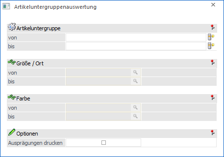
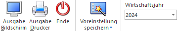

Im Menüpunkt…
1 WinLine FAKT
1 Auswertungen
1 Artikellisten
1 Artikeluntergruppenauswertung
… kann eine Übersicht über die angelegten Artikeluntergruppen mit deren Werten (Lagerstand, Lagerwert, Umsatz und Rohertrag) ausgegeben werden.

Die Ausgabe kann durch folgende Kriterien eingeschränkt bzw. beeinflusst werden:
Ø Artikeluntergruppe von / bis
In diesen Feldern kann nach den Artikeluntergruppen eingeschränkt werden, welche in der Auswertung berücksichtigt werden sollen.
Ø Ausprägung 1 von / bis (hier "Größe / Ort")
Sobald die Option "Ausprägungen drucken" aktiviert wurde, kann an dieser Stelle eine Einschränkung auf die Ausprägung 1 vorgenommen werden. Die selektierten Ausprägungen werden in der weiteren Folge in der Auswertung einzeln aufgeschlüsselt dargestellt.
Ø Ausprägung 2 von / bis (hier "Farbe")
Sobald die Option "Ausprägungen drucken" aktiviert wurde, kann neben Ausprägung 1 kann auch eine Einschränkung auf die Ausprägung 2 vorgenommen werden. Die selektierten Ausprägungen werden in der weiteren Folge in der Auswertung einzeln aufgeschlüsselt dargestellt.
Ø Ausprägungen drucken
Durch Aktivierung dieser Option werden auch die Ausprägungen, die innerhalb einer Artikelgruppe definiert wurden, mit angedruckt.
Buttons

Ø Ausgabe Bildschirm
Mit Hilfe des Buttons "Ausgabe Bildschirm" oder der Taste F5 wird die Auswertung am Bildschirm ausgegeben.
Ø Ausgabe Drucker
Durch Anwahl des Buttons "Ausgabe Drucker" wird die Auswertung am Drucker ausgegeben.
Ø Ende
Durch Drücken des Buttons "Ende" bzw. der Taste ESC wird das Fenster geschlossen.
Ø Voreinstellung speichern
Durch Anwahl dieses Buttons erfolgt eine benutzerspezifische Speicherung aller im Fenster getätigten Einstellungen. Diese sogenannten "Voreinstellungen" können jederzeit wieder abgerufen werden und ermöglichen dadurch ein schnelleres und zielorientierteres Arbeiten (nähere Informationen entnehmen Sie bitte dem Kapitel "Die Voreinstellungen").
Ø Wirtschaftsjahr
Über die Auswahlbox kann das Wirtschaftsjahr gewählt werden, für welches die Auswertung erfolgen soll. Damit können die Daten aus den Vorjahren angezeigt werden, ohne dass das Fenster geschlossen und ein manueller Wirtschaftsjahreswechsel vorgenommen werden muss.